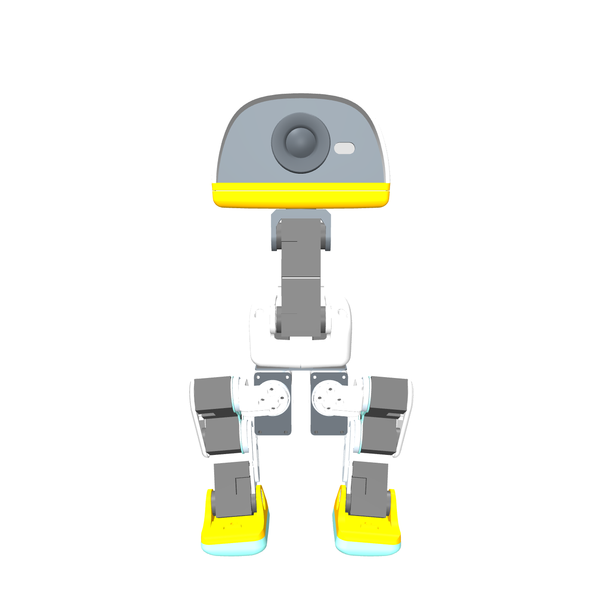
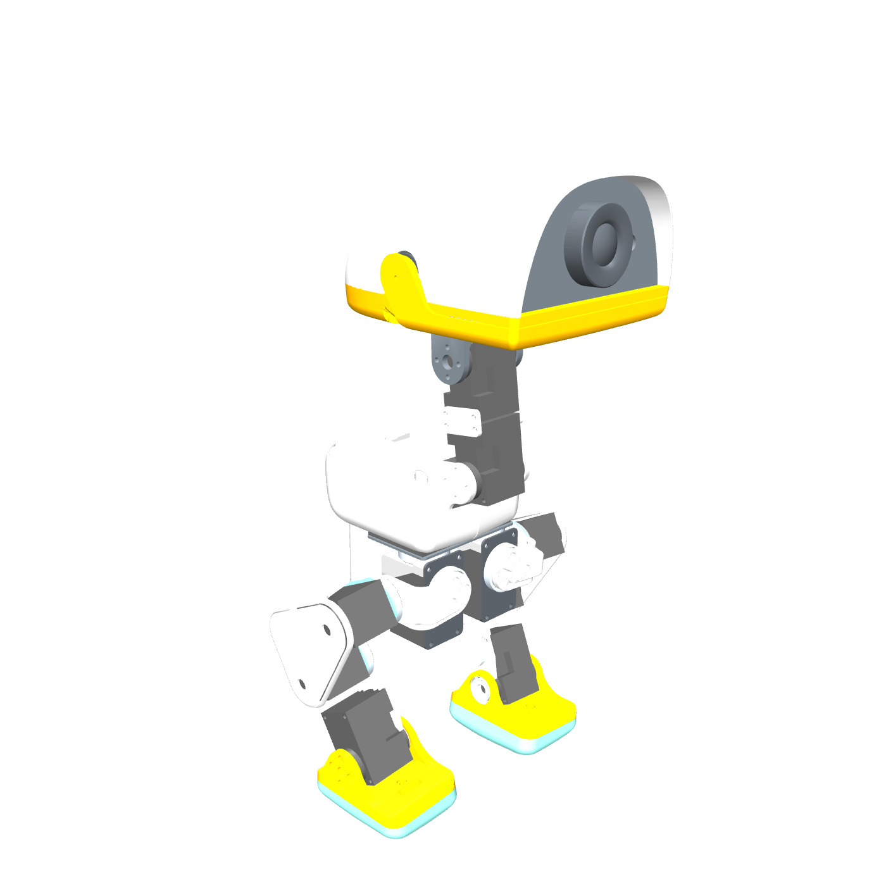
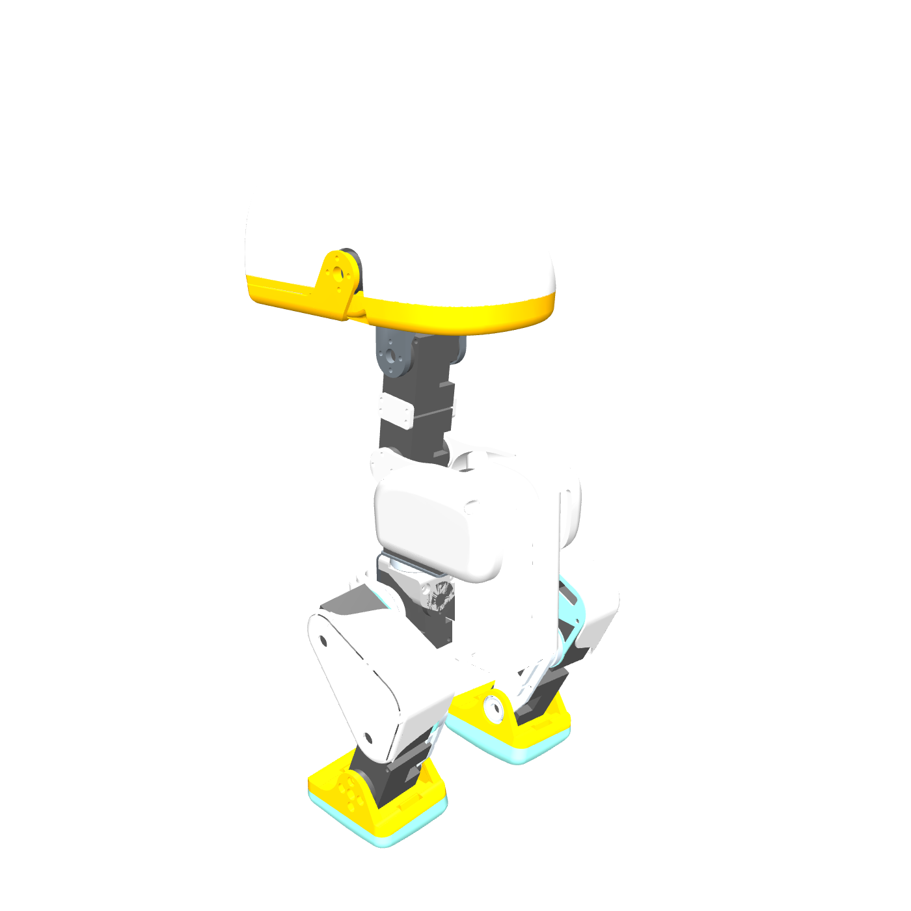
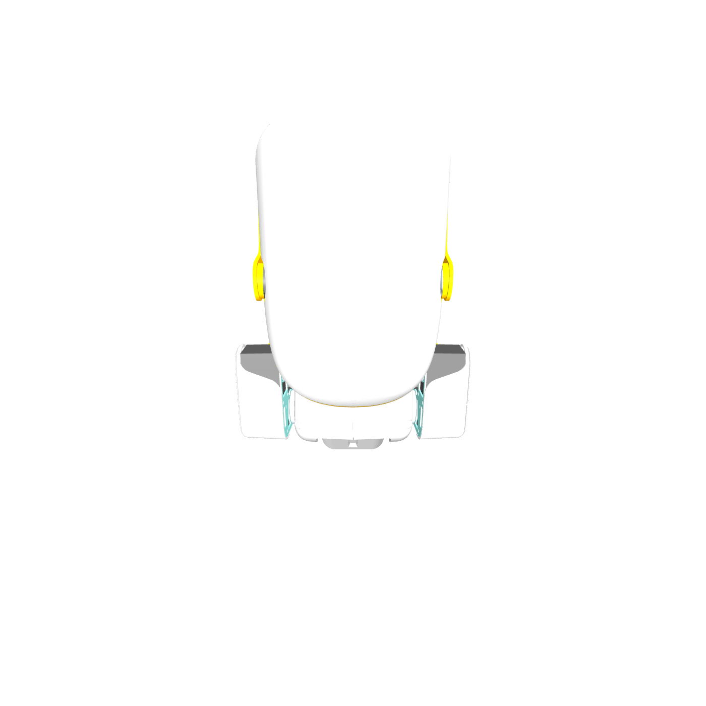

Microduck reverse-engineering · reference conformance
Reference match: our CAD vs the official Microduck
Every render below is our reconstructed geometry, posed at the same standing pose and shot from the same camera angle as the corresponding photo on pollen-robotics.com. Same meshes Pollen published, in Pollen's own kinematic model — so the comparison is a shape check, not an art match.
1Is it the exact same?
Short version: the geometry is the same by construction; the color and the exact pose are not, and for good reasons stated below.
trunk_base, yaw2roll,
upper_leg_left/right, leg, bearing_roll, power_support,
banana_pcb_locker, upper_leg_rigidity_plate) were each graded against Pollen's mesh
at ≤ 1 mm p95 surface distance both ways before being swapped in. Everything else is Pollen's mesh
verbatim. So the silhouette, proportions and joint placement you see are the product's.
STAND keyframe with the
head brought up to a gentle gaze; the store photos are art-directed poses at unknown joint angles, shot on
a long product-photography lens (near-orthographic). Our free camera is a normal perspective, so the
silhouette lines up but the perspective foreshortening differs a little.
2Profile — official photo beside our CAD
The cleanest 1:1 check: a pure side view on white. Left is Pollen's product photo; right is our CAD at the matched angle.
Left profile (cream colourway)


The neck stack, the beak overhang, the thigh triangle, the ankle servo block and the foot plate all land in the same places. The head reads a touch more compact and the beak is the sim's yellow rather than the product's orange; both are colour/finish, not shape.
Right profile (graphite colourway)


3Our CAD, every angle
The same posed model swept around the vertical axis and from above — one model load, eight cameras, a clean white studio scene (no floor, white sky, two-point fill).






4Joint close-ups — the rig is already built in
These are not a separate model. They are the same posed robot, with the camera pushed
in on one joint. Posing is instant (mj_resetDataKeyframe + mj_forward, milliseconds) —
no CAD-kernel rebuild — because the kinematics are already encoded in the model we reused.


Every one of the 14 actuated hinges carries a full dynamic definition, not just a visual pivot — axis, origin, travel limit, and the servo's own damping / armature / friction / position-gain / torque limit. A sample straight from the model:
| Joint | Axis | Range (°) | Damping | Armature | Friction | kp | Torque limit (N·m) |
|---|---|---|---|---|---|---|---|
| left_hip_yaw | z | −25 … +30 | 0.15 | 0.001 | 0.10 | 10.0 | ±20.0 |
| left_hip_roll | x | −22 … +22 | 0.048 | 0.002 | 0.006 | 0.52 | ±0.91 |
| left_hip_pitch | y | −90 … +90 | 0.041 | 0.002 | 0.032 | 0.39 | ±0.67 |
| left_knee | z | −90 … +90 | 0.044 | 0.0017 | 0.013 | 0.43 | ±0.75 |
| left_ankle | z | −90 … +90 | 0.053 | 0.0018 | 0.0048 | 0.55 | ±0.96 |
Source: sim/microduck_ours.xml (Pollen's onshape-to-robot
export). Torque limits match the Dynamixel XL330-M288-T stall envelope. The triad side mirrors each hinge as
a measured connection in ce-assemblies/microduck/current/joints.json (world origin in mm, world
axis, range, parent/child body), so the joint exists in two representations that agree.
So why did anything take “a long time”?
Rigging did not — it was reused, instantly. What is slow is building the parametric solid assembly in the FreeCAD kernel (≈70 boolean placements, minutes). That is solid modelling, a different job from posing. For visualisation, simulation and these comparison shots we drive the meshes directly through the model, so the kernel build is never on the path.
5Method & honest caveats
- Renderer. MuJoCo 3.12 offscreen, 1400² on a white-sky studio scene with no floor and two directional
fills — script
sim/compare_render.py, scene dumped toout/compare/_studio_scene.xml. - Pose. The model's
STANDkeyframe (Pollen'sDEFAULT_POSE) with neck- and head-pitch reduced to a gentle gaze so the head is not tilted 40° into the floor. Photos are unknown poses. - Colour is schematic. Beak yellow and soles teal are the model's own material colours; the product is painted white with orange accents. We did not repaint to match marketing.
- Two content drifts in Pollen's published assets (documented, not ours to fix): the sim carries a
raspberry_pi_zero_2_wcompute placeholder and annp_f970battery mesh, whereas the shipping product is a Radxa Zero 3W and an NP-F550-class cell. These are asset-naming drifts in the reference, called out in the release dossier. - What this page does not prove. It is a visual/geometric conformance check. It is not a metrology report — we have not laser-scanned a physical unit. The ≤1 mm figure is our rebuilds vs Pollen's mesh, not vs a real duck.